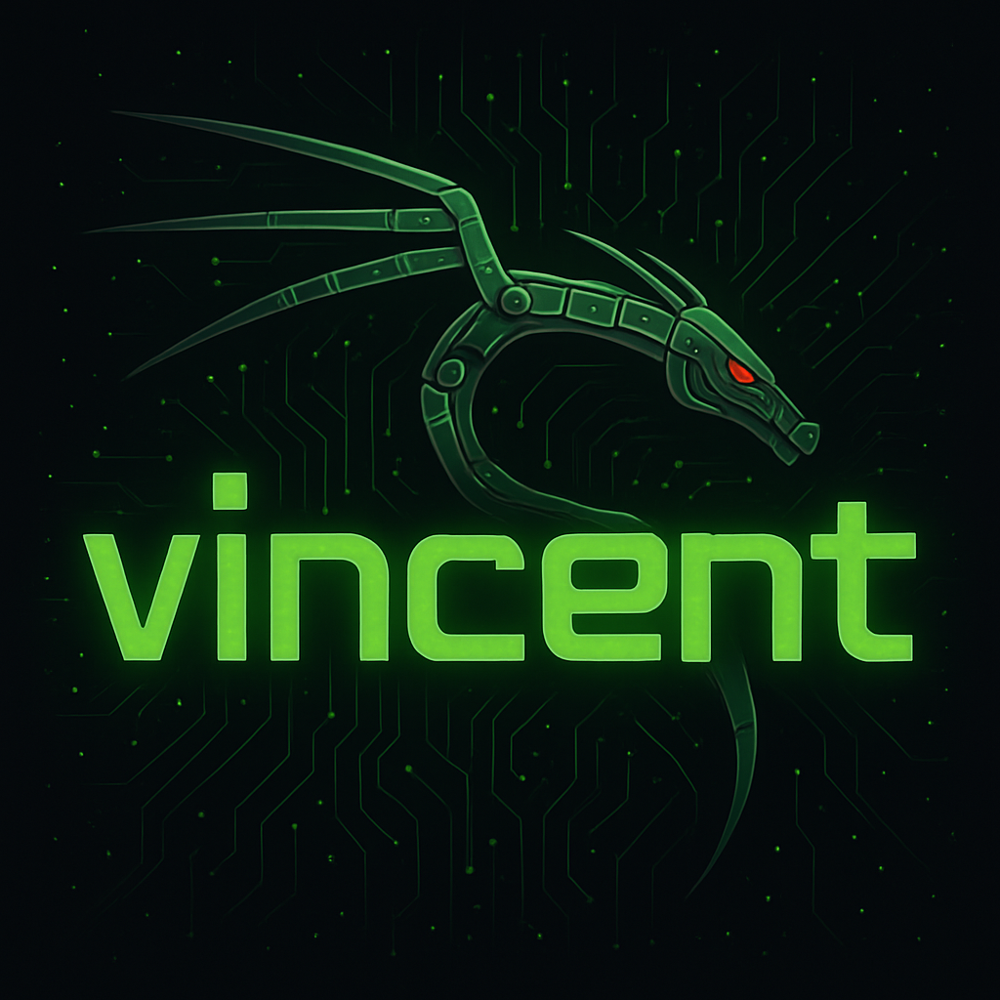

Disponible pour alternance / emploi

ANDREO Vincent
Cogolin, Var (83) — France

Formation axée sur les technologies informatiques, avec deux options principales permettant de se spécialiser dans des domaines complémentaires
Solutions Logicielles et Applications Métiers
Spécialisation en programmation, gestion de bases de données, et développement d'applications web et mobiles. Formation centrée sur la création de solutions logicielles adaptées aux besoins métiers et la gestion de projets informatiques.
Cybersécurité
L'option SLAM intègre les principes de sécurité dans le développement. Elle permet d'apprendre à concevoir des applications fiables, en protégeant les données utilisateurs, en appliquant les bonnes pratiques de codage (ex. : OWASP) et en utilisant des protocoles sécurisés (HTTPS, authentification, chiffrement).
Solutions d'Infrastructure, Systèmes et Réseaux
Spécialisation en gestion des infrastructures réseaux, administration des serveurs et sécurisation des systèmes. Formation axée sur la mise en place, l'entretien et la sécurisation des réseaux d'entreprise et des systèmes informatiques.
Cybersécurité
L'option SISR forme à la protection des systèmes d'information. Elle couvre la configuration de pare-feux, la gestion des accès, la surveillance des systèmes, la mise en place de sauvegardes et la réponse aux incidents pour garantir la sécurité et la disponibilité des services.